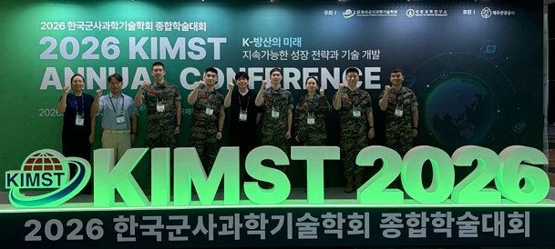

SLM 기반 해안 경계 이벤트 위험도 분류
이선홍, 최원석, 이우준, 김유찬. 2026 한국군사과학기술학회 종합학술대회.
- 연도
- 2026
- 발표
- 한국군사과학기술학회(KIMST) 종합학술대회
- 키워드
- 소형 언어모델(SLM), PEFT, QLoRA, 해안 경계, 분류
초록
이 연구는 해안 경계 이벤트를 분류하고 간략한 상황 보고문을 생성하는 SLM 기반 모델을 제안합니다. 일반화한 이벤트 샘플 926개로 데이터셋을 만들어 학습·검증·테스트 데이터로 나누었습니다. QLoRA 기반 PEFT 모델이 기준 모델보다 높은 성능을 보여, 위험 탐지와 보고를 자동화할 가능성을 확인했습니다.
방법
- 위험 라벨과 짧은 상황 보고문이 붙은 지시문 형식 샘플 926개(위험 471개, 정상 455개)를 만들었습니다. 기밀이나 민감한 정보가 들어가지 않도록 데이터를 일반화했고, 해병대 인원이 검토했습니다.
- 데이터를 8:1:1로 나누어 학습·검증·테스트 세트를 만들었습니다.
kanana-1.5-2.1b-instruct-2505를 추가 학습 없이 기준 모델로 평가한 뒤, QLoRA로 미세조정해 같은 테스트 세트에서 두 모델을 비교했습니다.
결과
| 모델 | 정확도 | 매크로 정밀도 | 매크로 재현율 | 매크로 F1 |
|---|---|---|---|---|
| 기준 모델 | 0.6344 | 0.7311 | 0.6444 | 0.6007 |
| PEFT (QLoRA) | 0.9462 | 0.9466 | 0.9458 | 0.9461 |
언론 보도
- 한양대 ERICA와 해병대가 한국군사과학기술학회에서 AI 교육 성과를 발표(새 탭에서 열림) · 중앙일보, 2026년 6월 24일. 이 논문의 바탕이 된 군·학 AI 교육 프로그램과 2026년 6월 10~12일 학술대회 발표를 다룬 기사입니다.

파일
Small Language Model-Based Risk Classification of Coastal Surveillance Events
Seon Hong Lee, Wonseok Choi, Woojoon Lee, Yuchan Kim. Korea Institute of Military Science and Technology (KIMST) Annual Conference, 2026.
- Year
- 2026
- Venue
- Korea Institute of Military Science and Technology (KIMST) Annual Conference
- Keywords
- Small Language Model, PEFT, QLoRA, Coastal Surveillance, Classification
Abstract
This study proposes an SLM-based model for classifying coastal surveillance events and generating brief situation reports. A dataset of 926 generalized event samples was constructed and split into training, validation, and test dataset. The QLoRA-based PEFT model outperformed the baseline model, demonstrating its potential for automated risk detection and reporting.
Method
- Built 926 instruction-format samples (471 risk, 455 normal), each with a risk label and a short situation report. Data was generalized to exclude classified or sensitive information and reviewed by Marine Corps personnel.
- Split the data 8:1:1 into training, validation and test sets.
- Evaluated
kanana-1.5-2.1b-instruct-2505as the baseline without extra training, then fine-tuned it with QLoRA and compared both on the same test set.
Results
| Model | Accuracy | Macro precision | Macro recall | Macro F1 |
|---|---|---|---|---|
| Baseline | 0.6344 | 0.7311 | 0.6444 | 0.6007 |
| PEFT (QLoRA) | 0.9462 | 0.9466 | 0.9458 | 0.9461 |
In the News
- Hanyang University ERICA and ROK Marine Corps present AI education results at the KIMST conference · JoongAng Ilbo, Jun 24, 2026 (in Korean). Covers the military–academic AI education program behind this paper and the team’s presentation at the conference on June 10–12, 2026.